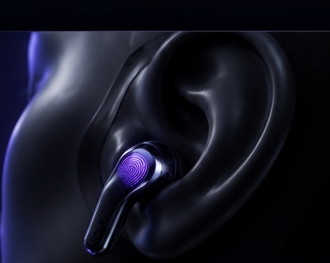
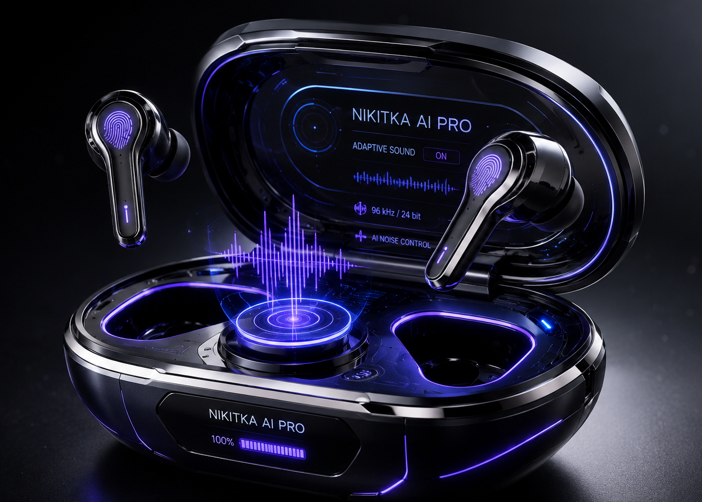

NIKITKA AI PRO
Вымышленный флагман для портфолио: нейро-звук, живое радио и кинематографичный разбор устройства в одном интерактивном сайте.

Технологии будущего
Пять коротких сценариев показывают, чем могла бы отличаться гарнитура в реальном продукте.
NeuroSound AI
Демо-профиль адаптирует сцену, бас и детализацию под выбранный режим прослушивания.
Live Translate Concept
Сценарий ассистента показывает, как мог бы выглядеть перевод речи прямо в гарнитуре.
Focus Gesture
Футуристичный режим фокуса: сайт демонстрирует идею управления через жесты и внимание.
Adaptive ANC 2.0
Визуальный сценарий умного шумоподавления для улицы, студии и спокойного прослушивания.
Energy System
Концепт-кейс с OLED-индикатором, магнитной посадкой и беспроводной зарядкой.
Эстетика.
Технологии.
Будущее.
Визуальный язык Nikitka AI PRO строится вокруг прозрачного кейса, холодного стекла, мягкой подсветки и интерфейса, который хочется рассматривать крупным планом.
Исследовать дизайн
Интерактивная Нейро-Анатомия
Локальная GLB-модель Nikitka AI PRO: кейс, крышка, два вкладыша, OLED-панель и световые детали вращаются в браузере и раскрываются слоями.

REAL GLB 3D Загружаю локальную 3D-модельВнутри Nikitka AI PRO
Кинематографичный разбор наушников: выбирай слой, а ролик мягко переходит к нужной детали.
Три премиальных решения
Nikitka AI PRO
Главный портфолио-концепт: прозрачный OLED-кейс, живой радиотест, кинематографичная анатомия и интерактивные аудио-режимы.
Послушай радио через Nikitka AI
Публичные бесплатные потоки SomaFM подключены напрямую: выбирай станцию и переключай профили звучания на лету.
Нейро-Эквалайзер
SomaFM Groove Salad • 128 kbps MP3Ambient/downtempo beats and chilled grooves.
Чистый радиопоток без окраски: источник проходит через плоскую цепь фильтров.
Нейронный Спектрограф
Активность аудио-сигнала в реальном времениMediaElement - flat EQ - analyser
Nikitka AI внутри
Демо-ассистент показывает сценарии будущей гарнитуры: подсказки, перевод, подбор радиостанции и настройку профиля фокуса без реальной отправки личных данных.
Поговорить с AI